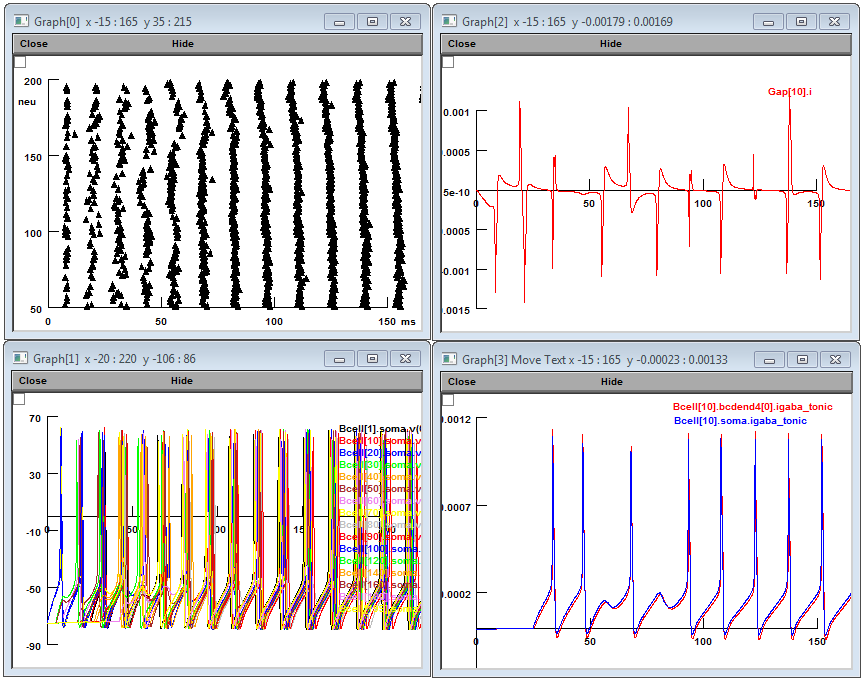

This is the readme for the model associated with the paper:
Proddutur A, Yu J, Elgammal FS, Santhakumar V (2013) Seizure-induced
alterations in fast-spiking basket cell GABA currents modulate
frequency and coherence of gamma oscillation in network
simulations. Chaos 23:046109
These files were contributed by A Proddutur.
The NEURON simulator is freely available from
http://www.neuron.yale.edu
Usage:
This model was originally run under and requires microsoft windows.
The mod files need to be compiled with mknrndll. To run
double click either
IClamp 50% gaps 30 SYNAPSES tonicspill -74mV_0.6nA.hoc
which in less than 10 minutes should produce figures like these
(zoomed in on the first 150 ms)

or
PPSTIM 50% gaps 30 SYNAPSES tonicspill -74mV.hoc
in Windows Explorer (after NEURON is installed).
Changelog
---------
2022-05: Updated MOD files to contain valid C++ and be compatible with
the upcoming versions 8.2 and 9.0 of NEURON.
2022-09: Update MOD files to avoid declaring variables and functions with the same name.
See https://github.com/neuronsimulator/nrn/pull/1992